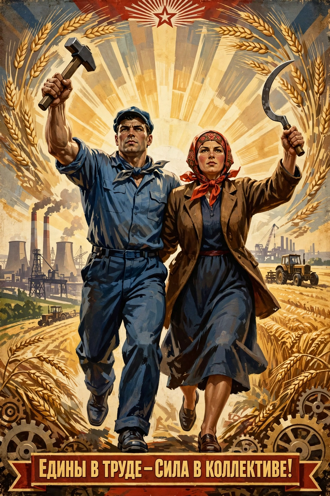

Socialist realism
| Socialist realism | |
|---|---|
 | |
| Years active | 1934–c. 1991 (as official doctrine in the USSR) |
| Country | Soviet Union and other socialist states |
| Major figures | Maxim Gorky, Andrei Zhdanov; in film: Grigori Aleksandrov, Ivan Pyryev |
| Influences | 19th-century realism; Marxist-Leninist ideology |
Socialist realism was the official cultural doctrine of the Soviet Union from 1934 until the late 1980s, and was adopted in other socialist states. It required artists to depict reality "truthfully, historically concretely, in its revolutionary development" — in practice, to present an optimistic, idealized picture of socialist life, glorifying workers, peasants, soldiers and the Communist Party. The doctrine was proclaimed at the First Congress of Soviet Writers in 1934, where Maxim Gorky and party ideologue Andrei Zhdanov were key speakers.
Principles
The doctrine rested on several tenets: narodnost (accessibility to the people), ideinost (ideological content), partiinost (party-mindedness) and klassovost (class content). Heroes were to be positive role models — Stakhanovite workers, collective farmers, engineers and Red Army soldiers — and plots typically followed a "master plot" in which a young hero gains political consciousness under the guidance of an older mentor. Modernist experimentation ("formalism") and pessimism were condemned.
In the arts
In literature, model works included Gorky's Mother (retroactively canonized) and Nikolai Ostrovsky's How the Steel Was Tempered. In visual art, painters such as Aleksandr Gerasimov produced monumental portraits and scenes of collective labour, while Vera Mukhina's sculpture Worker and Kolkhoz Woman (1937) became an emblem of the style. In cinema, administered by the state apparatus (see Goskino), the montage experiments of Kuleshov and Pudovkin gave way to accessible narrative films, notably the musical comedies of Grigori Aleksandrov starring Lyubov Orlova, and the collective-farm musicals of Ivan Pyryev.
Spread and decline
After the Second World War the doctrine was imposed across the Eastern Bloc and influenced cultural policy in China, where it merged with revolutionary romanticism. In the USSR it softened after Stalin's death in 1953 (the "Thaw") but remained the official standard; dissenting artists worked unofficially or in the underground. Socialist realism effectively ended with the dissolution of the Soviet Union in 1991, though its monuments and public art remain widespread across the former socialist world.